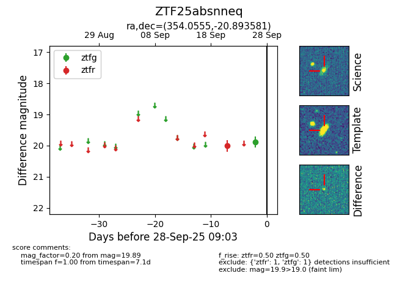

FINK: ZTF25absnneq
Lasair: ZTF25absnneq
ALeRCE: ZTF25absnneq
ZTF25absnneq (ztf,fink)
equatorial (ra, dec) = (354.0555,-20.89358)
galactic (l, b) = (48.8465,-71.75150)

last ztfg=19.89, ztfr=20.01
1 ztfg, 1 ztfr detections